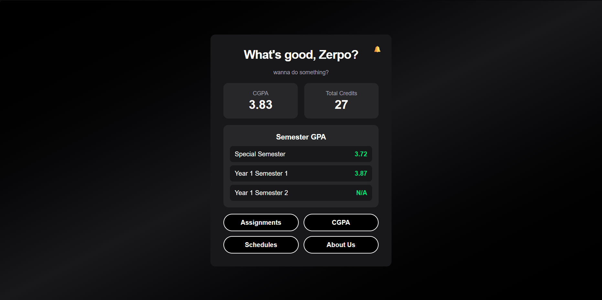
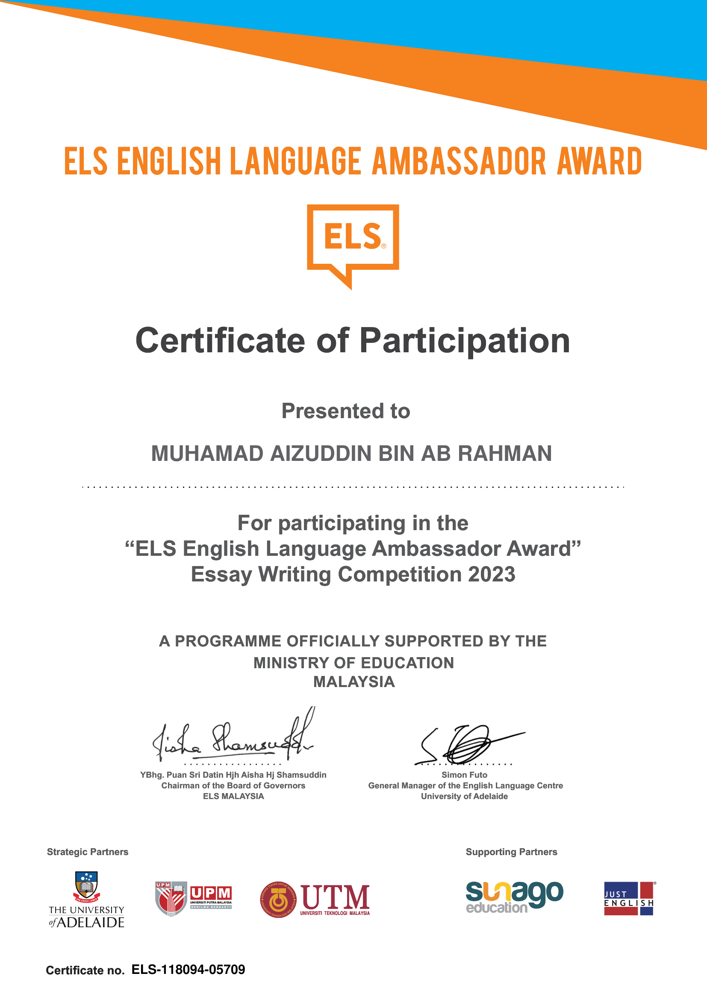
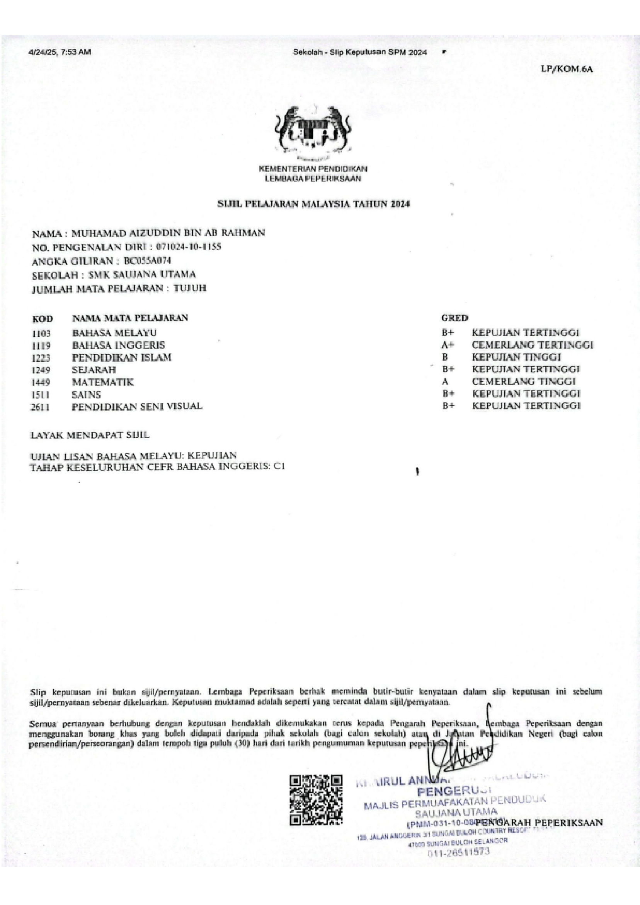
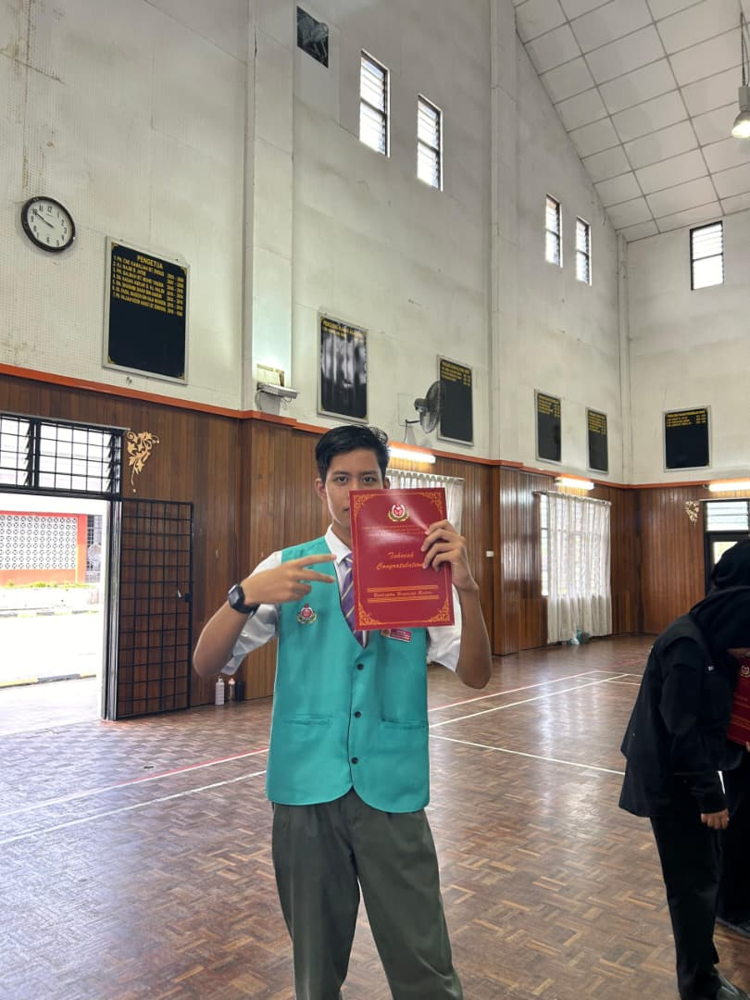
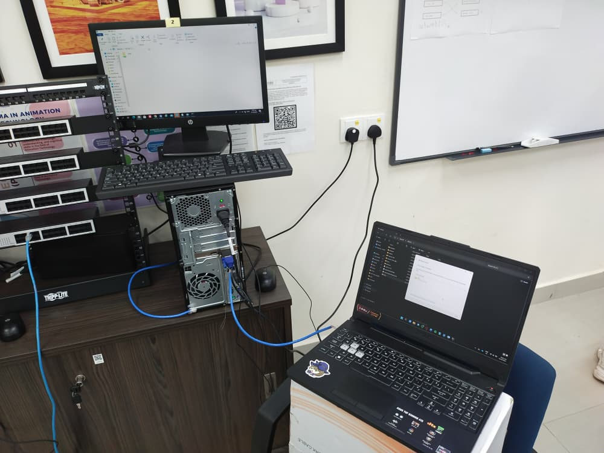
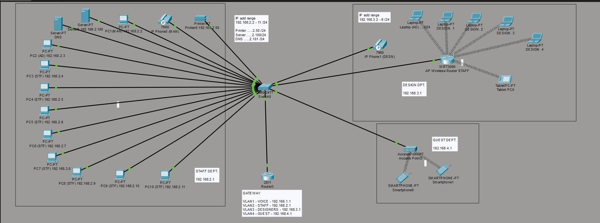

Selected visuals representing my projects, technical work, and experiences.

This interface shows the academic management system in use. It highlights my focus on clean UI design and usability.

The ELS English Language Ambassador Award Essay Writing Competition is a yearly CSR programme dedicated to supplementing the Malaysian Government’s efforts in ‘Driving English Language Excellence’ in our national schools.

SPM result slip representing my academic achievement before entering into Information Technology.

Pengawas Koperasi for 4 years (2021 - 2024) and Ahli Lembaga Koperasi (ALK) for 2 years (2022 - 2024) during SMK Saujana Utama.

Connecting a D.I.Y LAN cable (CAT5) from my personal laptop to another computer to test the connectivity.

Simulating an office network of about 20 workstations combined with added security (e.g, firewall, VLAN, etc.)